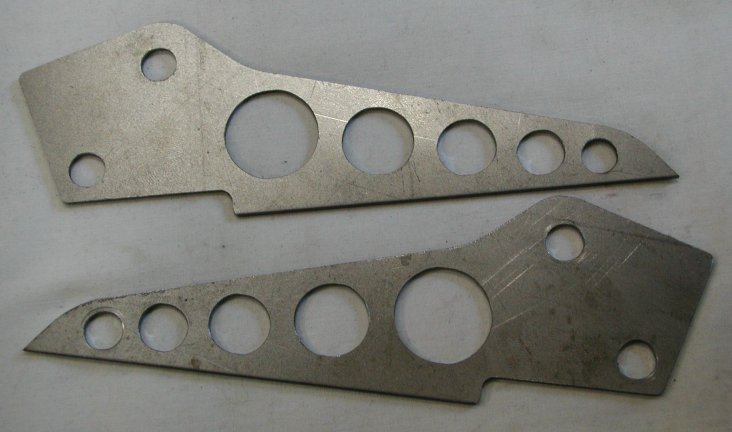
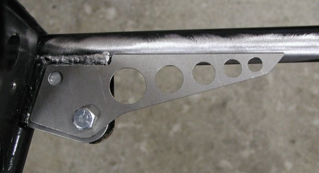
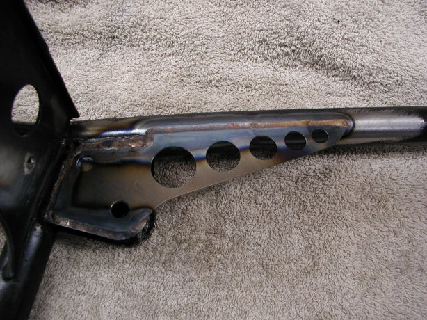

by Fred Eaton
Summary:
This article covers the procedure for adding additional support to the rear frame loop to 750 Commando frames.
On the 850 frame the inner shock mount was extended to help support the rear frame loop.
We have modified the design of the 850 bracket to extend it 2.4" further down the frame to provide more support.
We also brought the end to a point which tends to spread the forces down the length of the frame tube instead of perpendicular to the tube.
This procedure is normally done when a complete frame up restoration is being performed.

Procedure:
The first step is to clean the paint off the inside bracket and frame where the additional bracket will be welded.
The brackets are designed to fit around the existing welds so as not to disturb the existing bracket, but just add support.
Bolt the new support bracket to the cleaned inside bracket using the shock mount holes.

Weld the new support bracket to the existing bracket and the frame.

This page was written and designed by F. H. Eaton & Associates if you have any questions or comments please contact us at info@fheaton.com